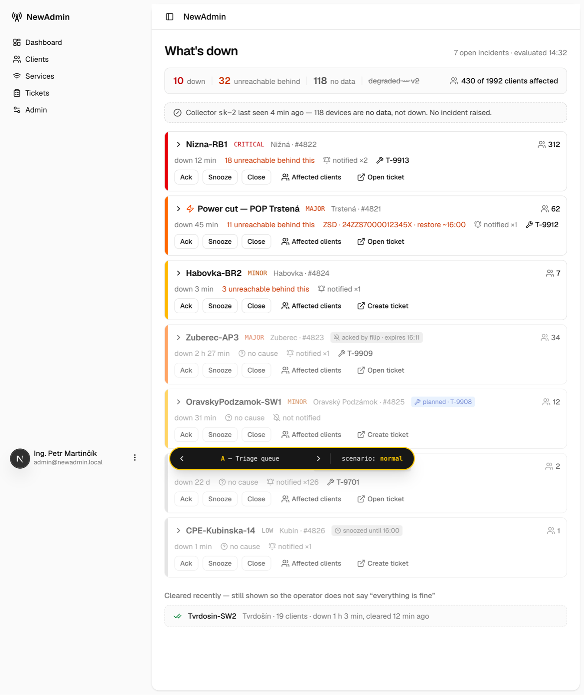
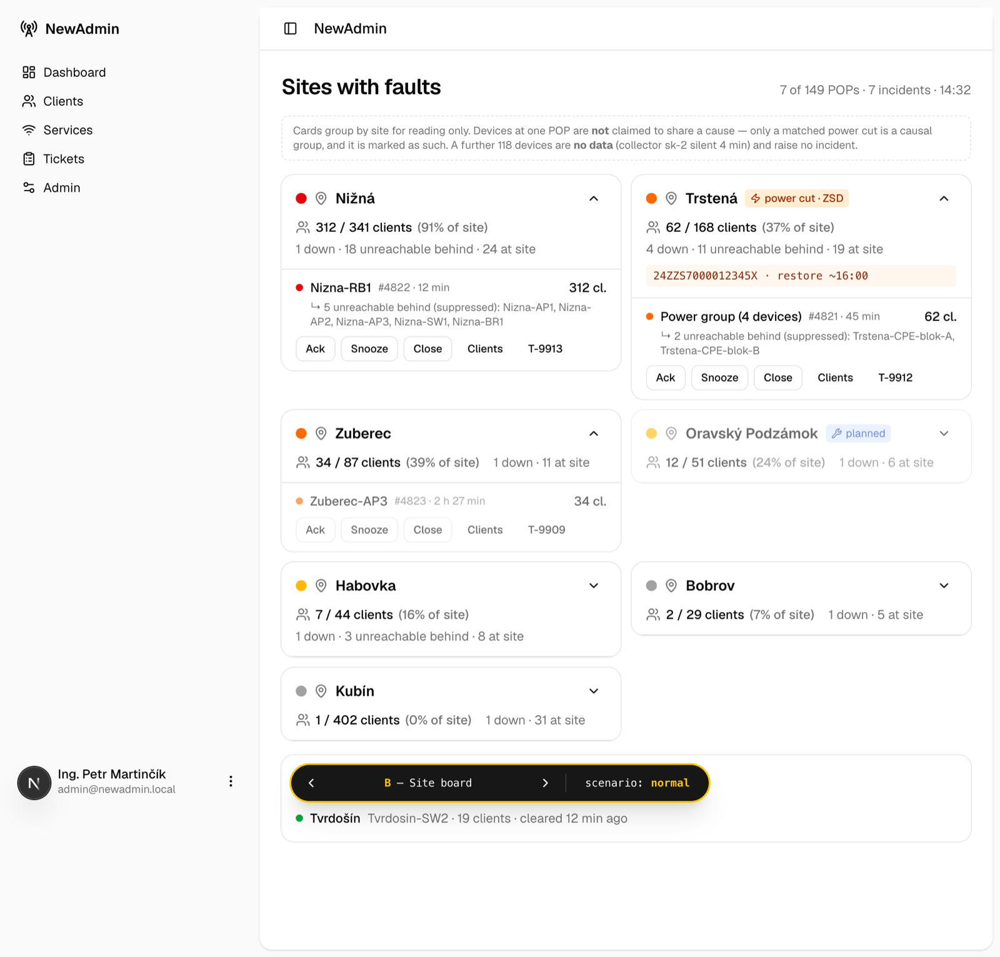
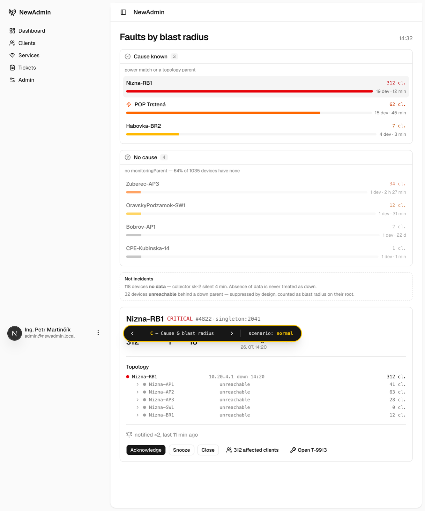
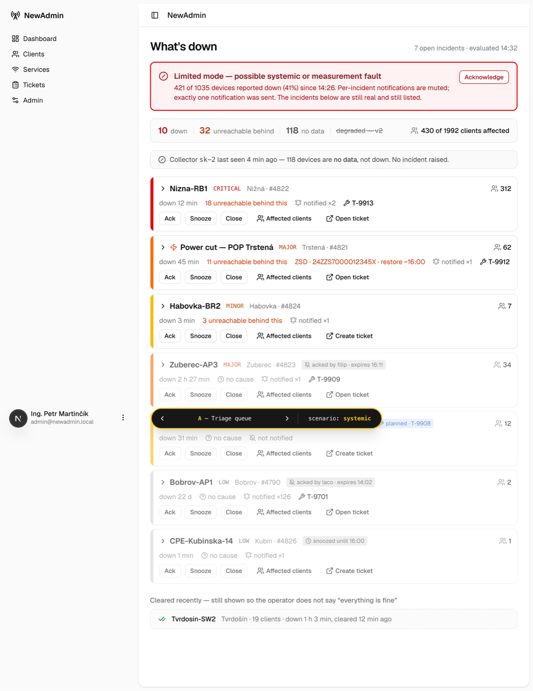
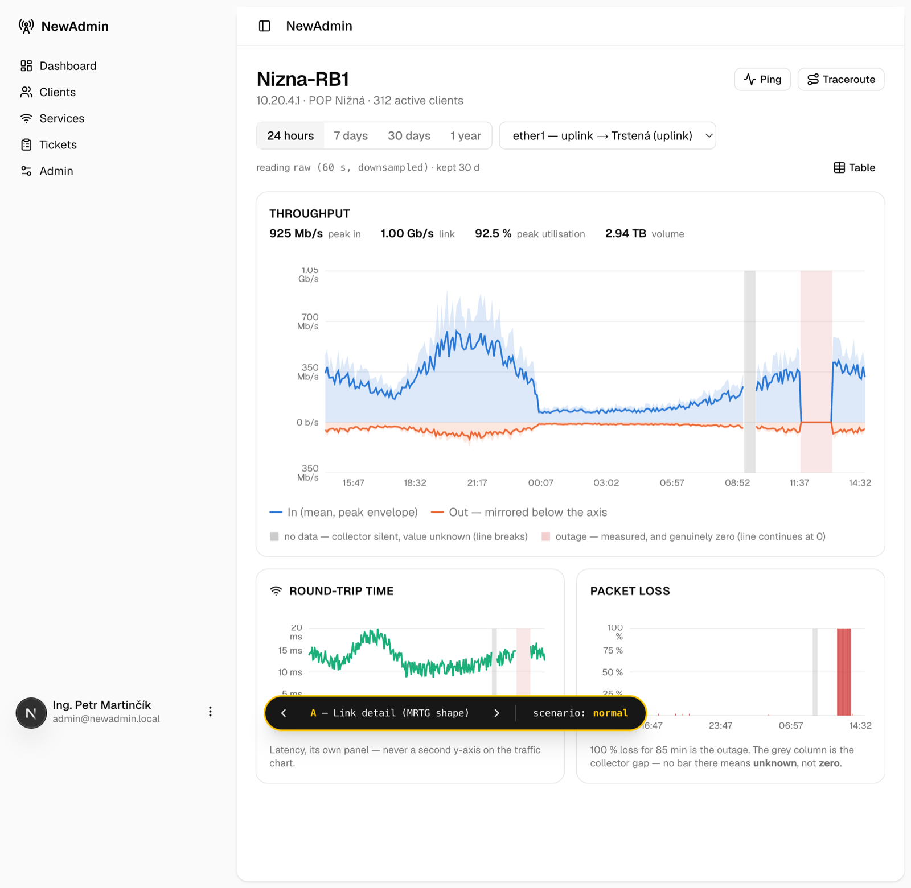
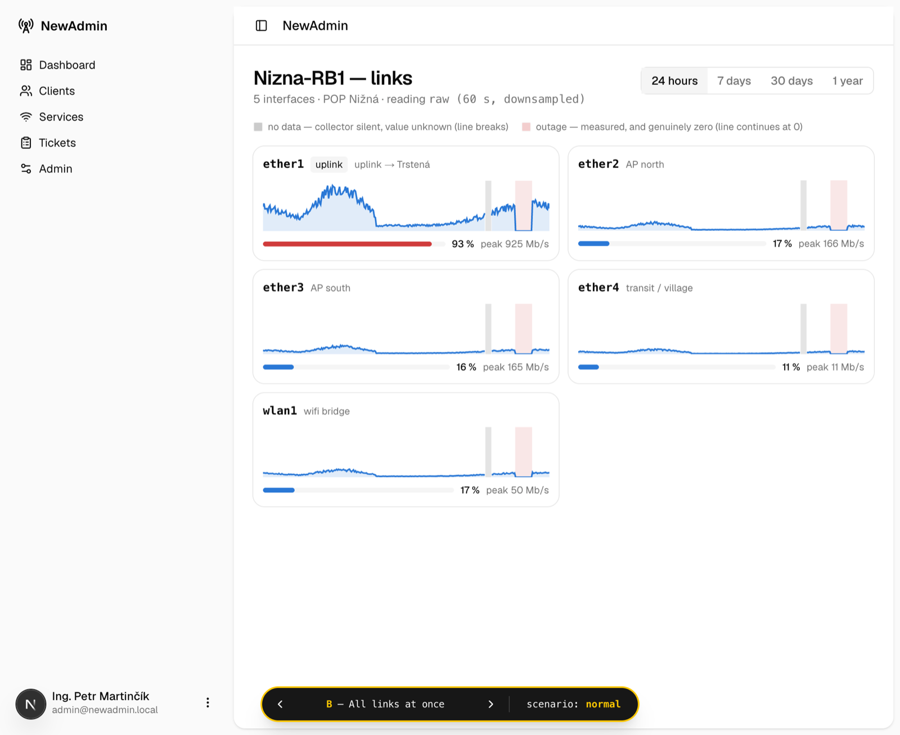
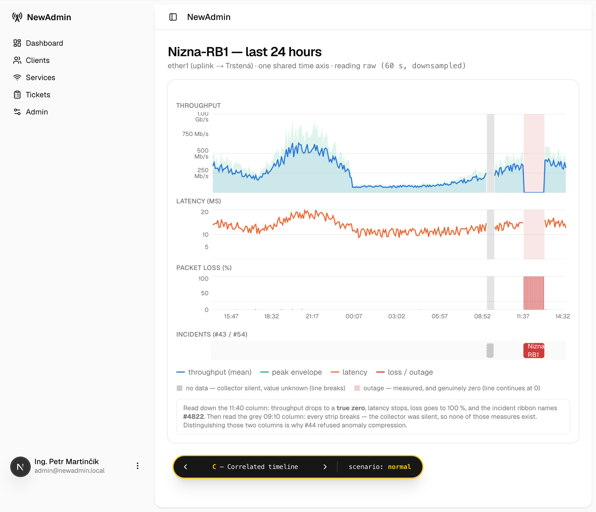

Ukázky · nic z toho ještě není hotové
K některým rozhodnutím jsme postavili funkční ukázky, abychom se nehádali o něčem, co si každý představuje jinak. Tady jsou. První je živá — dá se proklikat. Zbytek jsou snímky.
Tohle si můžeš proklikat. Ukázka projde celý hovor: zazvonění → karta klienta → rozepsaná poznámka → uložený úkol. Vyzkoušej i případ, kdy číslo sedí na dva klienty, a kdy je číslo neznámé.
Postavili jsme tři varianty a vybrali první. Podívej se hlavně na to, jestli bys podle toho dokázal ráno rozhodnout, co se řeší dřív.

Jeden řádek na jednu poruchu, tvrdě seřazené podle závažnosti a pak podle stáří.
Nahoře součty (10 nefunkčních · 32 nedostupných za nimi · 118 bez dat) a věta o tom,
že sonda sk-2 mlčí. Potvrzené a odložené poruchy klesají dolů a šednou.
Všimni si popisku „no cause" — to je ta značka z NET-23, která přiznává, že
u téhle poruchy neznáme příčinu.

Čte se hezčeji, ale kartička s názvem místa vypadá jako tvrzení o příčině — a to je přesně to, co jsi v NET-09 zakázal. Proto vypadla, i když vizuálně vyhrávala.

Rozděluje poruchy na „známe příčinu" a „nevíme". Zamítnuto proto, že tím přestává být závažnost tím hlavním, podle čeho se řadí — a to je celé kouzlo varianty A.

Když spadne přes 40 % zařízení, nahoře naskočí pruh „omezený režim", odejde jediná zpráva a jednotlivé poruchy zůstanou vypsané pod ním. Takhle vypadá to, o čem je NET-10.
Tady jsme schválně nevybrali. Rozhodli jsme jen pravidla, jak se grafy smějí chovat, a tvar necháváme na chvíli, kdy poteče skutečná data. Ukazujeme to, abys viděl, o čem se bavíme.

Klasický tvar, jaký znáš z routeru: stažená a odeslaná data přes sebe. Šedý pruh = nemáme data, červený = výpadek. Čára se v šedém pruhu přeruší — nikdy se nedokresluje, protože rovná čára přes výpadek je lež.

Hodně malých grafů najednou. Dobré na to všimnout si, že jeden spoj vypadá jinak než ostatní. Špatné na čtení podrobností.

Provoz, odezva a poruchy nad jednou společnou osou, aby šlo vidět, co se dělo ve stejnou chvíli. Nejlepší na hledání příčiny, nejhorší na běžné koukání.